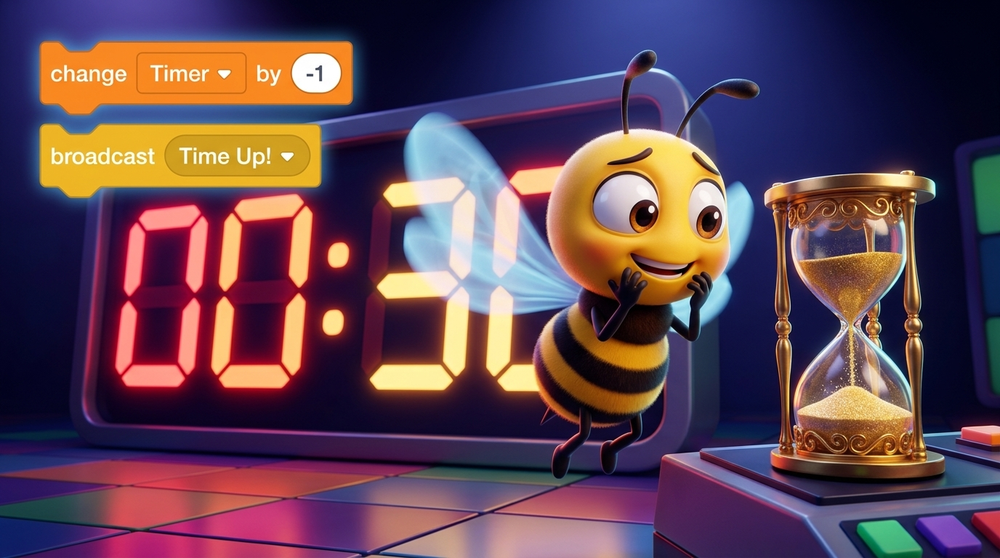

Beekoding
Platform Edukasi Koding & AI
STAGE 2: SESI 15
Selamat datang di STAGE 2: SESI 15! Hari ini kita naik level dengan menguasai Variabel Waktu 30 Detik, Analogi Jam Pasir, Loop Hitung Mundur, dan Alarm Kemenangan. Siapkan logikamu untuk menghadirkan ketegangan seru di game arkade kita!
Waktu menghitung mundur dari 30 ke 0repeat until <Waktu = 0> [wait (1) secs ➔ change Waktu by (-1)]
Bayangkan sebuah jam pasir (hourglass): di awal, tabung atas terisi penuh 30 butiran pasir. Setiap 1 detik berlalu, tepat 1 butir pasir jatuh ke bawah hingga butiran habis di angka 0!
wait (1) secs menahan jeda waktu sebelum butiran berikutnya jatuhchange Waktu by (-1) menurunkan angka (30 ➔ 29 ➔ 28 ... ➔ 0)[wait (1) secs ➔ change Waktu by (-1)]
Sebelum jam pasir dibalik, kita harus memastikan tabung pasir terisi penuh. Di Scratch, kita wajib menyiapkan variabel Waktu ke angka 30 setiap kali bendera hijau diklik!
Inilah instruksi utama sistem hitung mundur: kita mengulangi pengurangan waktu sebesar -1 setiap jeda 1 detik sampai nilai Waktu = 0!
Begitu loop hitung mundur selesai di detik ke-0, pesan WaktuHabis terpancar! Sprite panggung langsung membunyikan alarm kemenangan dan mengumumkan skor akhir!
Mari rangkai 4 tahapan alur pikir sistem timer hitung mundur ini agar kode kita rapi dan mudah dipahami:
set Waktu to 30 & set Skor to 0Waktu sebesar -1Waktu = 0? Jika belum, ulangi langkah 2broadcast WaktuHabis & bunyikan Alarm Kemenangan!Perpaduan variabel dinamis, loop bersyarat, dan alarm siaran universal!
Waktunya menguji nyali! Klik bendera hijau dan tangkap apel sebanyak mungkin sebelum Waktu 30 Detik habis dan Alarm Kemenangan berbunyi!
Saat merakit timer hitung mundur, ada 2 jebakan bug yang sering dialami programmer. Yuk pelajari perbandingannya agar kodemu bekerja sempurna:
wait 1 seconds agar waktu tidak habis sekejap mata-1 agar waktu berkurang, bukan bertambahWaktu = 0Selamat! Kamu telah menguasai sistem hitung mundur dan alarm kemenangan seperti game profesional. Mari kita ingat 3 kunci penting hari ini:
Waktu menghitung mundur dari 30 ke 0repeat until [wait (1) secs ➔ change Waktu by (-1)]Kamu resmi menguasai modul Timer Hitung Mundur & Alarm Kemenangan di Beekoding Academy!
Game arkade buatanmu semakin menegangkan dan seru dimainkan! Jangan lupa simpan file proyek Scratch (.sb3) di laptopmu hari ini.
File ➔ Save to your computer di Scratch StudioTetap semangat bereksplorasi dan berkreasi membuat game impian bersama Beekoding Academy!